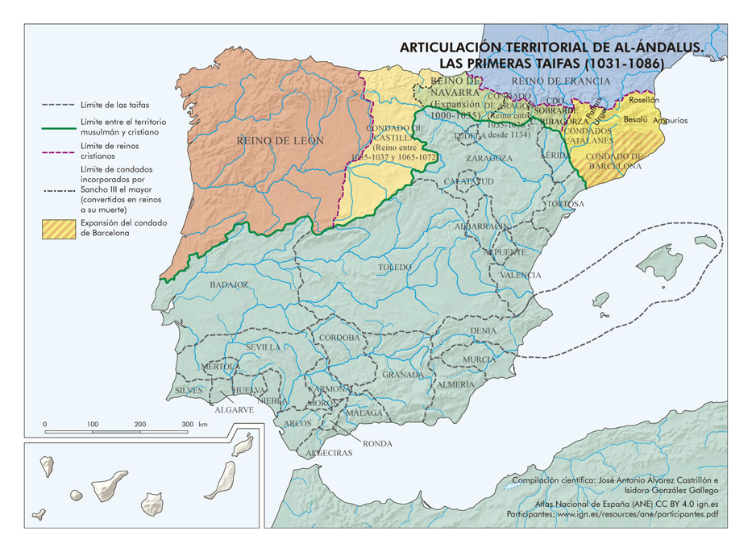

Título da Imagem / Obra
Descrição expandida ou texto completo do poema/citação.
FFLCH • Prof. Dr. Saul Kirschbaum
Plataforma Digital Integrada de Apoio à Monitoria Acadêmica. Cartografia histórica oficial de Sabuco, versos do cânone sefardita traduzidos, léxico de 20 termos e acervo bibliográfico internacional.
Conheça os fundamentos pedagógicos e historiográficos que norteiam esta experiência de estudo em Literatura Hebraica II.
O objetivo central desta monitoria é oferecer um percurso didático imersivo pela poesia neo-hebraica produzida em Al-Andalus entre os séculos X e XII, momento em que a cultura judaica alcançou uma síntese ímpar com as formas poéticas e filosóficas da civilização islâmica.
Todo o conteúdo pedagógico desta plataforma fundamenta-se nos trabalhos acadêmicos do Prof. Dr. Saul Kirschbaum e dos principais especialistas no judaísmo peninsular medieval.
Selecione um poeta para alternar o mapa histórico e a citação poética correspondente (Clique no mapa ou no texto para expandir em tela cheia!).

28 Mapas de altíssima definição cobrindo a Hispania Visigoda, Al-Andalus, Califato de Córdoba, Taifas e a Reconquista. Clique para expandir qualquer mapa em tela cheia!
20 conceitos historiográficos, jurídicos, linguísticos e poéticos explicados com rigor acadêmico e referências da USP. Filtre por categoria!
Clique em qualquer citação acadêmica para expandi-la em tela cheia com leitura confortável.
“O florescimento cultural se fez acompanhar de incorporação política, com muitos judeus galgando posições proeminentes na administração do estado... Em contato com a luxuriante civilização árabe, a poesia neo-hebraica de inspiração litúrgica voltou a se expandir.”
“Esses pequenos reinos hispano-muçulmanos têm o mérito de que sua debilidade política não foi obstáculo para o culto às ciências e às letras; ao contrário, a emulação mútua entre as taifas proporcionou a esses príncipes dias de verdadeiro esplendor.”
“Por um lado, a conexão com a tradição dos antepassados é clara. Mas por outra parte, os judeus que vivem em Al-Andalus deixam-se fecundar pela cultura árabe, chegando assim a uma síntesis rica e única.”
“A Andaluzia funcionou como um espaço de diálogo estético no qual metros e imagens poéticas circulavam livremente entre a lírica árabe, hebraica e romance.”
Guia bibliográfico especializado contendo edições impressas, periódicos acadêmicos e repositórios universitários de nível internacional para pesquisa dos alunos.
Descrição expandida ou texto completo do poema/citação.